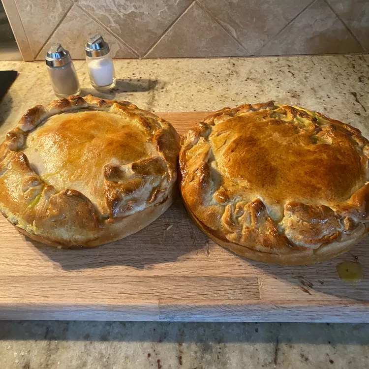

Special Italian Easter Pizza

Description of the recipe
With this delicious recipe for a special italian eastern pizza you are most definitely going to be craving for
more after your first bite. Once you sink your mouth into this one you are going to have to let your family and
friends know about this recipe!
Ingredients
- ½ pound bulk Italian sausage
- 1 tablespoon olive oil, or as needed
- 1 (1 pound) loaf frozen bread dough, thawed
- 9 large eggs, divided
- ½ pound sliced mozzarella cheese
- ½ pound sliced cooked ham
- ½ pound sliced provolone cheese
- ½ pound sliced salam
- ½ pound sliced pepperoni
- 1 (16 ounce) container ricotta cheese
- ½ cup grated Parmesan cheese
- 1 teaspoon water
Steps
- Cook and stir Italian sausage in a skillet over medium heat until browned and crumbly, 5 to 8 minutes. Drain excess grease; set sausage aside.
- Preheat the oven to 350 degrees F (175 degrees C). Oil the bottom and sides of a 10-inch springform pan with olive oil.
- Cut 1/3 of the dough off the loaf and set aside under a cloth. Form the remaining dough into a ball; roll ball on a floured work surface into a 14-inch circle. Press circle into the bottom and up the sides of the prepared springform pan; excess dough will hand over the edges.
- Whisk 8 eggs in a 2-cup liquid measure.
- Working with only 1/2 of the ingredients at a time, make layers in the pan in the following order: sausage, mozzarella, ham, provolone, salami, pepperoni, ricotta, and Parmesan. Pour in 1/2 of the beaten eggs. Repeat layers once more, starting with sausage and ending with Parmesan. Pour remaining beaten eggs over top.
- Roll out remaining bread dough into a 12-inch circle. Place over the pie to form a top crust. Roll and pinch any overhanging bottom crust over top crust to seal in the filling.
- Beat remaining egg and water in a small bowl. Brush egg wash over top crust.
- Bake in the preheated oven until the crust is golden brown and the filling is set, 50 to 60 minutes. A toothpick inserted into the middle of the crust should come out without any raw egg.
- Remove from the oven and cool in the pan for at least 25 minutes, then release the spring and remove pie from the pan. Transfer to a serving platter and cut into wedges for serving.
Back To Top